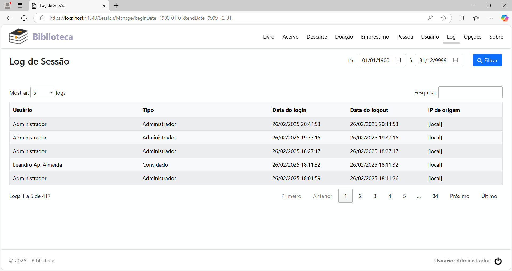

Menu Log
Clicando na opção de menu Log, será exibida a página Log de Sessão. Nesta página, são exibidos os registros de acesso ao sistema. Esta opção está disponível apenas para o usuário Administrador.

Configurando os campos de intervalo de datas, localizados no cabeçalho da página, e clicando no botão Filtrar, pode-se listar os acessos em qualquer período.